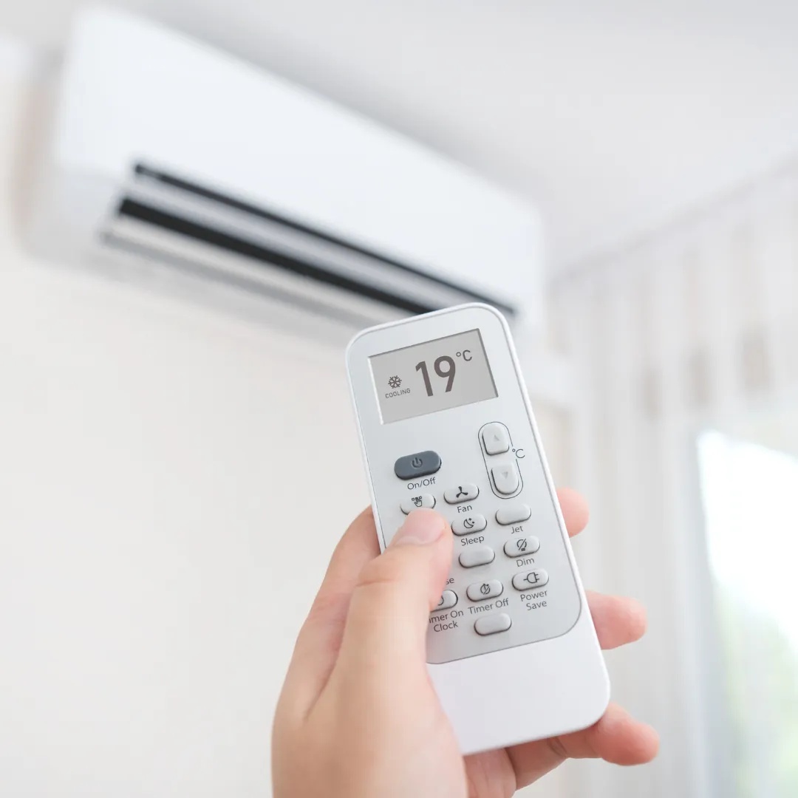
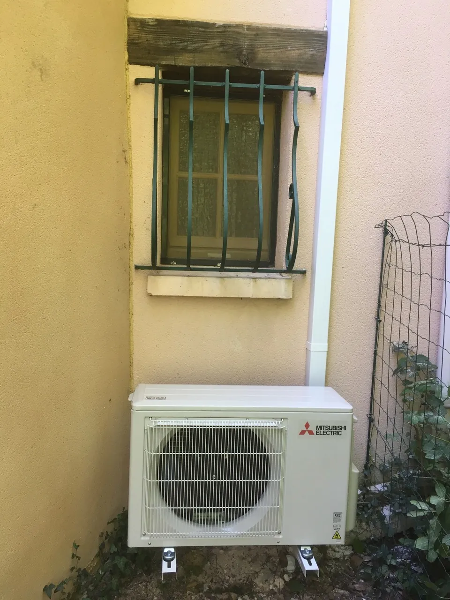
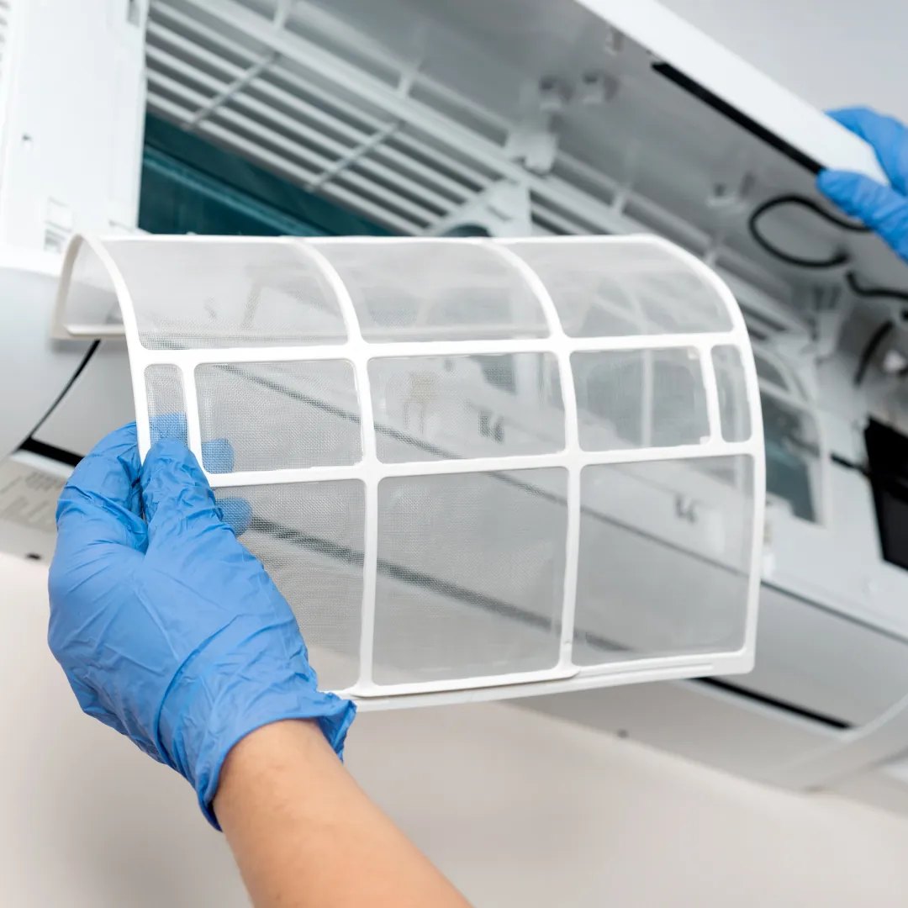

Suite aux fortes chaleurs présentent en région PACA en été, de plus en plus d’habitants décident d’installer un climatiseur dans leur domicile.
Si vous disposez d’un système de climatisation dans votre maison, vous n’êtes pas sans savoir que l’entretien de celui-ci est très important pour son bon fonctionnement.
Bien que les températures se soient refroidies, l’entretien de la climatisation reste une tâche à intégrer dans vos habitudes, hiver comme été.
Dans cet article nous allons vous expliquez comment entretenir votre climatiseur et pourquoi c’est important.

L’importance d’entretenir
Entretenir sa climatisation, c’est éviter de nombreux problèmes.
Un filtre sale peut entraîner des dommages que l’on aurait pu éviter : surconsommation d’énergie, dysfonctionnement de l’appareil ou encore une panne.
L’entretien de celui-ci va vous permettre de faire des économies et d’éviter également des dommages sanitaires comme les allergies ou l’asthme.
Dans l’air soufflé, il est possible de retrouver du pollen et des champignons en poussière lorsque le filtre est mal entretenu. Cela accentue les allergies ainsi que les problèmes respiratoires des personnes concernées.
D’autres bactéries peuvent également se former comme la légionellose qui déclenche des infections respiratoires sérieuses comme les pneumopathies. Cette bactérie est très dangereuse pour les personnes fragiles.

Ce qui peut être réalisé seul
Pour éviter les dommages énoncés précédemment, voici nos astuces pour entretenir votre installation.
Dans l’entretien du climatiseur, il y a des étapes que vous pouvez faire seul.
N’oubliez pas d’éteindre le courant avant de procéder aux étapes suivantes.
Premièrement, vous pouvez nettoyer les filtres à air qui se trouvent dans l’unité intérieure de la climatisation, en les enlevant du split. Pour éliminer toute la poussière présente dedans, vous pouvez utiliser un aspirateur. Ensuite lavez les avec de l’eau et du savon. Vous les laisserez sécher le temps qu’il faut et ensuite vous les remettrez à leur place. Rien de plus simple n’est-ce pas ?
Dès que vous avez fini cette première étape, vous pouvez purifier le ventilateur après l’avoir enlevé de l’unité extérieure de la climatisation. Pour cela, munissez-vous d’une bombe à air afin de le nettoyer.
Pour enlever toute la poussière de celui-ci, privilégiez un chiffon avec de l’eau.
Pour finir, n’oubliez pas de vider le bac à condensat. L’eau à l’intérieur stagne depuis un moment et cela entraîne la formation de bactéries.
Comme dit dans le paragraphe précédent, les bactéries présentent peuvent être dangereuses pour certaines personnes. Alors il ne faut pas négliger les étapes que vous pouvez faire vous-mêmes.
L’entretien qui doit être réalisé par un professionnel
Nous avons vu comment entretenir sa climatisation soi-même, mais certaines étapes doivent être réalisées par des professionnels agréés.
Premièrement, dans l’arrêté du 29 février 2016, il a été stipulé que si votre système de climatisation contient plus de 2 Kg de fluide frigorigène, vous êtes dans l’obligation de faire intervenir un professionnel pour qu’il vérifie l’étanchéité de celui-ci au moins une fois par an.
Pour savoir si vous êtes dans cette obligation, vous pouvez vérifier le poids du gaz sur l’unité extérieure.
Aussi, lorsque vous remarquez que l’air n’est plus aussi frais qu’avant, vous devez faire appel à un professionnel pour qu’il recharge votre climatisation.
Le frigoriste va mettre la quantité de fluide frigorigène manquante pour remédier au problème.
Toutefois, si vous possédez votre climatisation depuis plus de 12 ans, il faudra la changer.
En effet, au fil des années, le fluide frigorigène perd peu à peu de ses performances. Celui-ci sert au rafraîchissement de l’air dans votre maison et est contenu dans l’unité extérieure de la climatisation.
Enfin, si votre climatiseur tombe en panne, vous êtes dans l’obligation de faire appel à un professionnel. Il trouvera la cause du dysfonctionnement. Si celui-ci est réparable, il procédera au dépannage. Sinon, le remplacement complet de l’appareil sera la seule option.
Afin de trouver un installateur de climatisation qualifié sur Marseille et en région PACA pour entretenir votre climatisation, faites appel à Plateo.
Grâce à la plateforme, vous pouvez faire votre demande de devis en ligne gratuitement et sans engagement. Vous serez mis en relation avec un artisan de confiance qui réalisera vos travaux.

Les fréquences
Les fréquences de nettoyage des équipements constituant la climatisation va dépendre de son utilisation.
En effet, si vous utilisez l’installation été comme hiver, les filtres à air doivent être nettoyés une fois toutes les deux semaines. Cela, surtout si votre habitation est neuve, il y a beaucoup de poussières dans l’air pendant la première année et peut encrasser les filtres.
Pour le ventilateur, vous pouvez le faire une fois par an, sauf si vous remarquez une augmentation de la présence de poussière dans votre maison ou appartement. Pareillement, pour le bac à condensats.